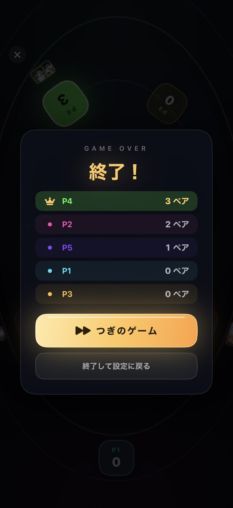
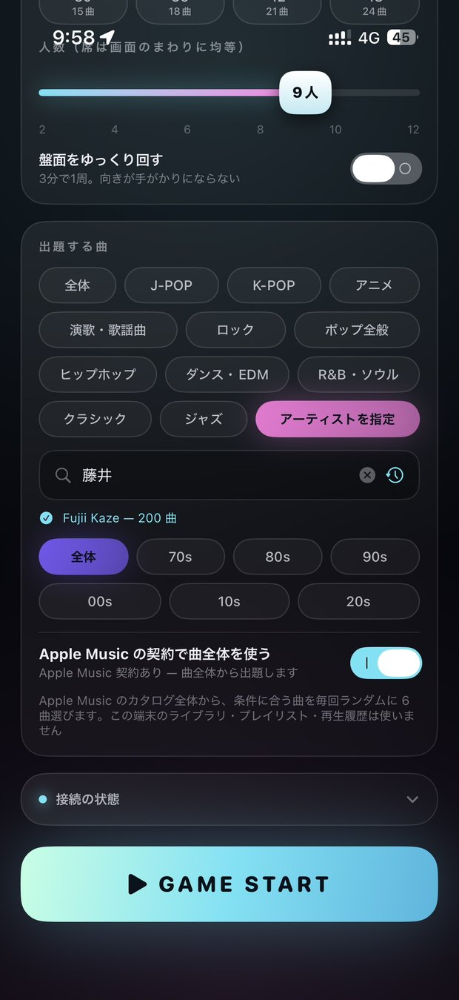
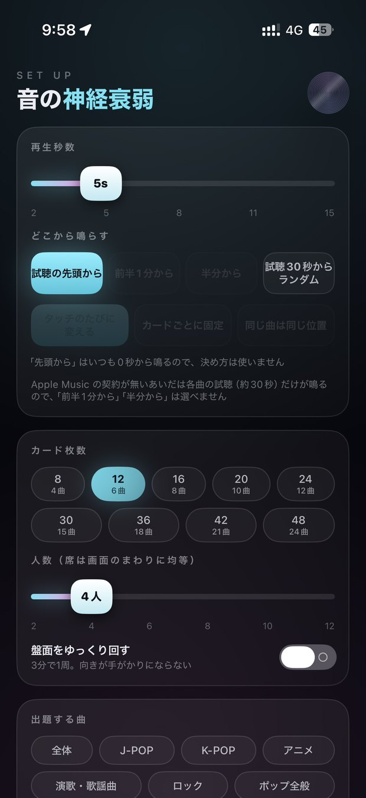
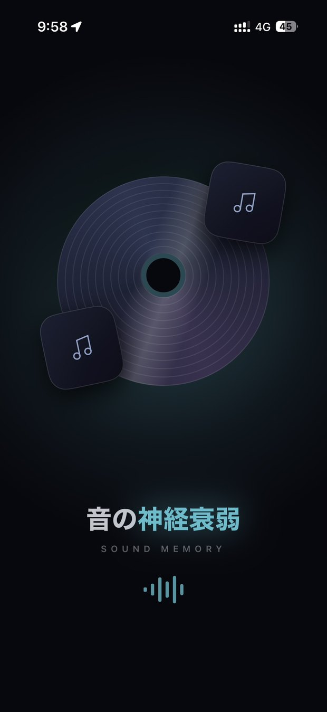

FEATURES
出題はApple Musicのカタログ全体からランダム。この端末のライブラリ・プレイリスト・再生履歴は一切使いません。だから初対面どうしでも、同じ条件で勝負できます。
めくったカードから曲が数秒だけ流れます。2〜15秒で調整でき、どこから鳴らすかも選べます。同じカードでも毎回ちがう場所を鳴らせば、難度は一気に上がります。
人気チャートと無作為な検索を毎回混ぜて集めます。直近に出した曲は次のゲームで後回しになるので、続けて遊んでも同じ曲が続きません。
11ジャンルと7年代を掛け合わせて出題範囲を決められます。アーティスト名を打てばその人の曲だけに。カンマ区切りで複数人まとめて指定もできます。
席は画面のまわりに均等に並び、得点は各自の向きで読めます。連戦の勝ち数は王冠で記録。ゲーム開始時はルーレットが回って、最初の人をランダムに決めます。
トップ20・50・100から出題範囲を絞れます。誰でも知っている曲だけで遊ぶことも、深いところまで掘ることも。条件に足りない範囲は選べないようになっています。
ペアがそろうと曲名とジャケットが画面の中央に大きく現れ、取った人の手元へ飛んでいきます。何を取ったかが、その場の全員に分かります。
HOW TO PLAY
テーブルの真ん中にiPhoneを置いて、みんなで囲むだけ。
人数、カード枚数、ジャンルや年代を決めて「GAME START」。曲がそろうまで少し待ちます。
カードをタップすると曲が数秒鳴ります。同じ曲だと思う2枚を当てられたら、そのペアは自分のものに。
外したら次の人の番。待ちきれないときは画面の余白をタップすれば、曲を止めてすぐ次へ進めます。
SCREENS
横にスクロールできます。




FAQ & SPEC
いりません。契約が無いときは各曲の試聴（約30秒）から出題します。契約があると曲ぜんぶが対象になり、「半分から」「全体からランダム」といった再生位置も選べるようになります。
出ません。出題はApple Musicのカタログから直接集めています。端末のライブラリ・プレイリスト・再生履歴は読み取っていないので、持ち主だけが有利になることはありません。
必要です。ゲーム開始時に曲を集めてダウンロードします。始まってしまえば途中で止まることはありません。
人数は2人からです。タイムアタック的にひとりで遊びたい場合は2人に設定して、両方を自分で操作してください。
| 対応 | iPhone / iOS 17 以降 |
|---|---|
| 人数 | 2〜12人 |
| カード | 8〜48枚（4〜24曲） |
| 再生 | 2〜15秒／再生位置・決め方を選択可 |
| 出題範囲 | 11ジャンル × 7年代 × 人気順、またはアーティスト指定 |
| 音源 | Apple Music カタログ（契約なしは試聴約30秒） |
| 価格 | 準備中 |